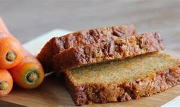

Chicha de zanahoria

Chicha de Harina de Zanahoria
Ingredientes
- 1 taza de harina de zanahoria
- 4 tazas de agua
- 1 taza de azúcar (ajustar al gusto)
- 1 cucharadita de canela en polvo
- 1/2 taza de jugo de limón (opcional)
- Una pizca de sal
Instrucciones
- Hervir el agua: En una olla grande, lleva las 4 tazas de agua a ebullición.
- Agregar la harina de zanahoria: Cuando el agua esté hirviendo, agrega la harina de zanahoria lentamente, revolviendo constantemente para evitar grumos.
- Cocinar: Reduce el fuego y cocina a fuego medio durante unos 15-20 minutos, revolviendo ocasionalmente, hasta que la mezcla espese.
- Endulzar: Agrega el azúcar, la canela y la pizca de sal. Mezcla bien y ajusta el dulzor según tu preferencia.
- Agregar jugo de limón: Si lo deseas, añade el jugo de limón y mezcla bien.
- Dejar enfriar: Retira del fuego y deja enfriar a temperatura ambiente. Luego, puedes refrigerar la chicha antes de servir.
- Servir: Sirve fría, y si lo prefieres, puedes añadir hielo.